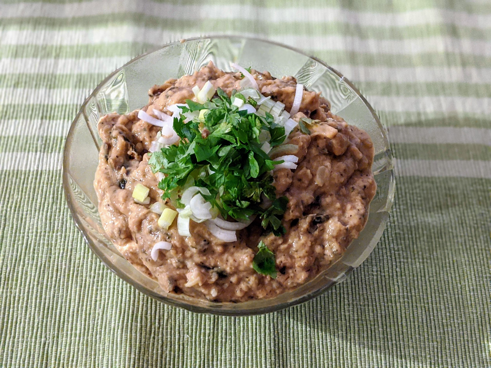

Houmous de courgette

Pour une belle quantité de houmous :
- 700g de courgettes grillées (voir note en bas)
- Trois gousses d'ail
- Une bonne cuillère à soupe de tahini
- Le jus d'un demi-citron (ou un peu plus, si on veut)
- Une pincée de piment de Cayenne ou de paprika
- Une poignée de persil plat frais
- Sel, poivre, huile d'olive
- Couper les courgettes en gros morceaux, écraser l'ail, et mixer tous les ingrédients à part le persil et l'huile d'olive. Goûter, rectifier l'assaisonnement.
- Mettre dans un bol, creuser un petit puits dedans, y verser un peu d'huile d'olive, et saupoudrer le tout du persil lavé et grossièrement ciselé.
Remarque : cette recette est prévue pour des courgettes au barbecue, donc c'est une bonne idée de prévoir des courgettes en plus quand on fait des grillades. C'est aussi possible de faire ça à partir de restes de courgettes marinées grillées, auquel cas l'ail, le piment, le sel et le poivre ne sont pas nécessaires.